Visite guidée interactive · 12 écrans
Toutes les fonctionnalités, écran par écran
17 captures réelles de la plateforme Ordria (production, 27/09/2026) — parcours apprenant, atelier formateur, backoffice, administration plateforme. Les pastilles dorées numérotées pointent les zones clés — survolez-les ou cliquez leur légende. Le flux entrant (comment on arrive sur cet écran) et le flux sortant (où chaque action mène) encadrent chaque écran.
🔍 Cliquer une capture pour l'agrandir — puis molette pour zoomer (jusqu'à ×5), glisser pour explorer, double-clic pour recentrer, Échap pour fermer.
01
learn.ordria.fr/orgs/protech/
La vitrine de l'organisation En place
Comment on arrive ici
- Lien partagé par PROTECH (carte de visite, réseau, emailing)
- Depuis /enter/protech ou le sélecteur d'organisations
- Chaque organisation a sa propre vitrine personnalisable
Où mènent les actions
- « Découvrir nos formations » → le catalogue (écran 03)
- « Voir la formation » → direct sur la page du cours RS7200 (écran 04)
- « Nous contacter » → email à support@protech-formation.fr
learn.ordria.fr/orgs/protech/
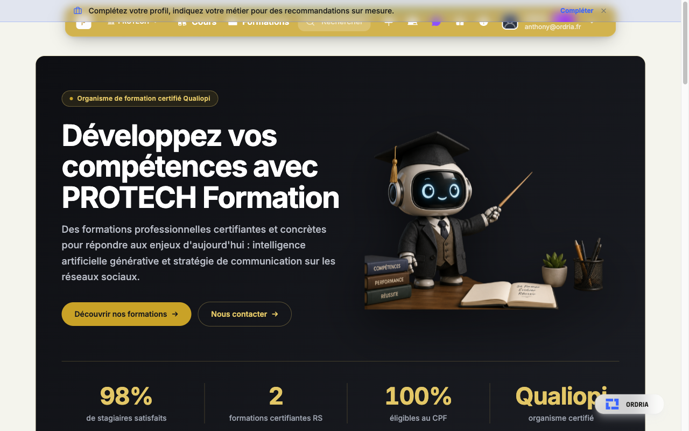
1 2 3 4 5 🔍 cliquer pour zoomer- 1Navigation publique — logo PROTECH, liens Cours et Formations, recherche unifiée (cours + membres), bouton Tableau de bord (visible seulement si le compte a les droits), avatar et menu compte. Le bandeau ambré au-dessus invite les nouveaux comptes à compléter leur métier.
- 2Badge de confiance — « Organisme de formation certifié Qualiopi » : pastille dorée au-dessus du titre, configurée dans le backoffice (écran 10). Le titre est en grande typographie display, dégradé nuit conforme à la charte PROTECH.
- 3Appels à l'action — bouton plein or (« Découvrir nos formations ») + bouton contour (« Nous contacter ») ; le survol fait glisser une flèche. Les couleurs viennent du réglage Branding de l'organisation.
- 4Mascotte animée — image détourée qui flotte doucement (7 s), fond dégradé exact du site vitrine protech-formation.com. L'animation se coupe automatiquement si la personne a activé « réduire les animations ».
- 5Chiffres clés — 98 % de stagiaires satisfaits · 2 formations certifiantes RS · 100 % éligibles CPF : bande de stats intégrée au héros avec séparateurs dorés. Plus bas : cartes des 2 formations, 7 logos OPCO, bandeau Qualiopi avec n° NDA, et section contact finale.
Personnalisation : chaque section (héros, chiffres, cartes formation, partenaires, certification, contact) s'ajoute, se réordonne et s'édite depuis Réglages → Landing (écran 10) : textes, images, fonds dégradés ou pleins, boutons, liens — sans code.
02
learn.ordria.fr/signup?inviteCode=…
Rejoindre l'organisation En place
Comment on arrive ici
- Clic sur le lien reçu par email d'invitation (valable 60 jours)
- Ou inscription avec un code de formation partagé
- Le lien porte l'organisation : la page affiche déjà PROTECH
Où mènent les actions
- « Rejoindre l'organisation » → membre apprenant immédiat → vitrine (écran 01)
- L'invitation « en attente » disparaît du backoffice automatiquement
- Sans code valide : la porte reste fermée (mode sur invitation)
learn.ordria.fr/signup?inviteCode=…
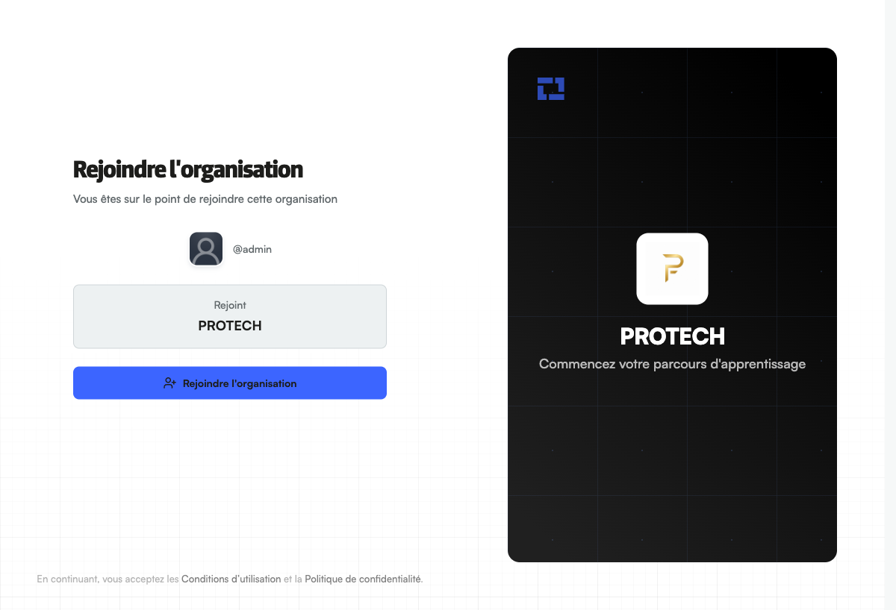
1 2 3 🔍 cliquer pour zoomer- 1Identité reconnue — la personne arrive connectée (ou crée son compte ici) : l'écran affiche son pseudo et son avatar ; nul besoin de re-saisir quoi que ce soit.
- 2Le bouton décisif — « Rejoindre l'organisation » crée l'adhésion à la seconde (rôle apprenant), puis redirige vers la vitrine. L'invitation consommée disparaît de la file « en attente » du backoffice.
- 3Carte organisation — logo et nom PROTECH à droite : impossible de se tromper d'organisation, le lien d'invitation est nominatif à l'org.
Sécurité : l'organisation est en mode « sur invitation » — les 3 portes possibles sont l'email d'invitation, le code de formation (ex. RS6776-SEP, diffusable par WhatsApp/oralement) et… rien d'autre : un visiteur sans code est poliment bloqué et orienté vers « Nous contacter ». Invitations et codes sont stockés en base : ils survivent aux redéploiements.
03
learn.ordria.fr/orgs/protech/courses
Le catalogue des cours En place
Comment on arrive ici
- Depuis la vitrine (« Découvrir nos formations »)
- Menu Cours de la navigation
- Après connexion : c'est la porte d'entrée des contenus
Où mènent les actions
- Clic sur une carte → page du cours (écran 04)
- Recherche en haut → résultats cours + membres
- « Reprendre » → reprise exacte de la dernière activité
learn.ordria.fr/orgs/protech/courses
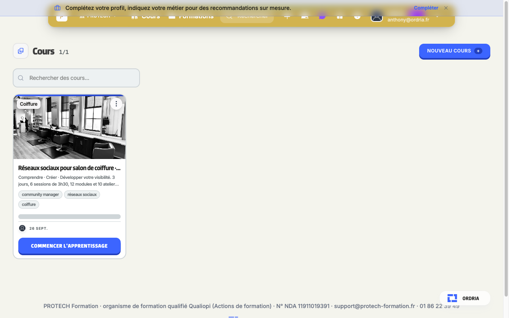
1 2 3 🔍 cliquer pour zoomer- 1Barre de recherche — recherche unifiée : tapez « post » et la formation RS7200 remonte, avec les membres dont le profil correspond. Suggestions instantanées.
- 2Carte de formation — miniature, titre complet « Réseaux sociaux pour salon de coiffure · Community Manager (21 h) », chips de tags métier (community manager, instagram, TikTok…), et le bouton d'action.
- 3État adapté — le bouton change selon la personne : « Commencer » (jamais entamé), « Reprendre · 17 % » (en cours), « Revoir » (terminé). Les cours non publiés n'apparaissent jamais ici.
Catalogue ou Library : le menu « Formations » regroupe les cours en dossiers thématiques configurés par l'équipe (ex. « Réseaux sociaux », « Bureautique ») ; « Cours » reste la vue plate et filtrable.
04
learn.ordria.fr/orgs/protech/course/b1a0eaf4…
La page de cours En place
Comment on arrive ici
- Depuis le catalogue ou la carte de la vitrine
- Bouton « Reprendre » du catalogue
Où mènent les actions
- « Reprendre · M2 » → l'activité en cours (écran 05)
- Clic sur un module du plan → ouverture directe
- À 13/13 → le certificat se débloque (téléchargement PDF)
learn.ordria.fr/orgs/protech/course/b1a0eaf4…
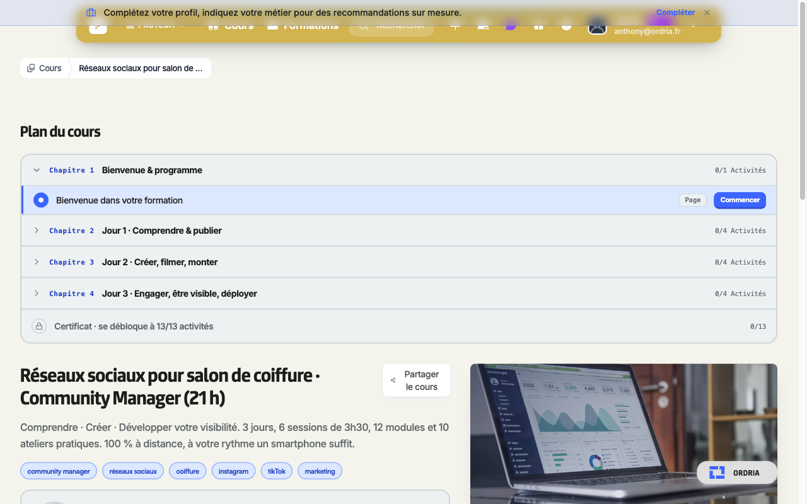
1 2 3 4 🔍 cliquer pour zoomer- 1Fil d'Ariane + titre — Cours › la formation ; titre H1, description courte, chips de tags ; en non-membre : bandeau « Vous consultez en tant qu'invité » + « Adhésion à l'organisation requise ».
- 2Carte de progression — anneau « 15 % », 2/13 activités terminées, module en cours (M2 · Le post et les bons outils) et gros bouton « Reprendre ». Mobile : la même information en bandeau vertical à segments.
- 3Plan du cours — 4 journées dépliables ; chaque module affiche son état (Revoir / Reprendre / Ouvrir). « Ce que vous allez apprendre » liste les 8 objectifs avec pictogrammes ; stats (4 modules · 13 activités · 2/13) au-dessus.
- 4Certificat verrouillé — « se débloque à 13/13 activités » : compteur visible en bas du plan. À la complétion, la page de fin affiche le certificat PDF nominatif (mention Qualiopi + n° NDA) téléchargeable et vérifiable publiquement par son numéro.
Règle de complétion : seules les activités publiées comptent dans le 13/13 — une activité brouillon ajoutée n'allonge jamais le parcours des apprenants déjà en cours.
05
…/course/b1a0eaf4…/activity/94c4ea91…
Lecture d'une activité En place
Comment on arrive ici
- Bouton « Reprendre » ou clic sur un module du plan
- Navigation précédent/suivant entre activités
Où mènent les actions
- Fin de page → marquage « terminé » automatique + barre de progression
- « Activité suivante » → module suivant du chapitre
- Quiz → note enregistrée dans la progression
…/course/…/activity/94c4ea91…
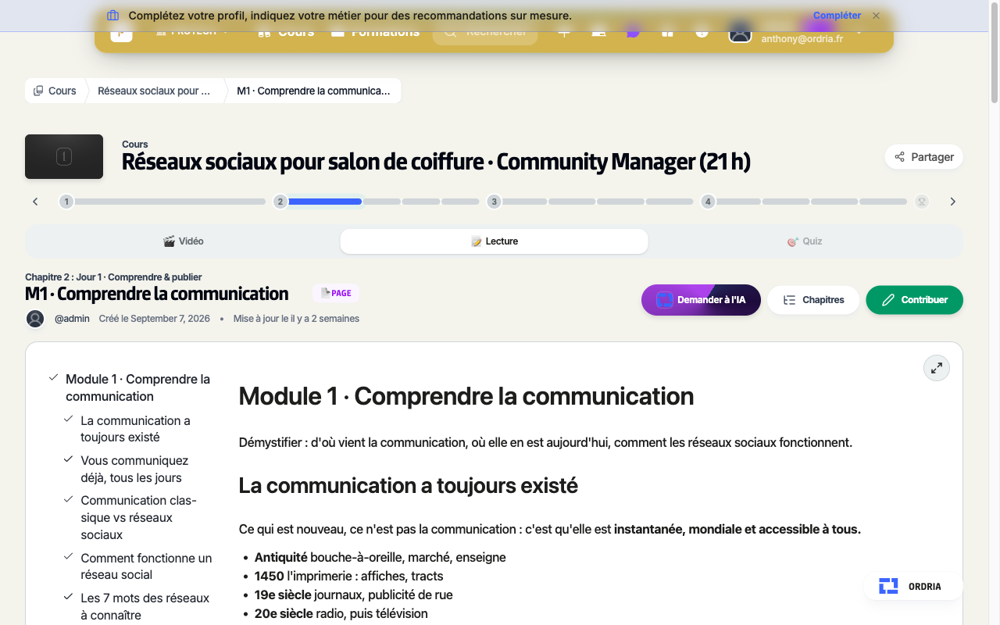
1 2 3 🔍 cliquer pour zoomer- 1Sommaire latéral — le plan du chapitre avec votre position ; chaque module terminé se coche. Se replie sur mobile en bandeau de segments noir/bleu.
- 2Titre et état — « M1 · Comprendre la communication » ; la barre supérieure suit la progression du cours en temps réel (2/13 → 3/13…).
- 3Contenu riche — texte structuré, images, vidéos (lecture adaptative), PDF intégrés, quiz. Le bouton Copilot IA (activable par l'organisation) répond aux questions à partir du contenu du cours. Le marquage « terminé » est automatique en fin de lecture.
Types d'activités : pages riches, quiz notés, vidéos, devoirs à remettre (dépôt de fichier + correction par le formateur). Chaque activité peut être publique, payante ou déverrouillée par une précédente (verrous d'accès).
06
…/dash/courses/course/b1a0eaf4…/content
Éditeur — le plan du cours En place
Comment on arrive ici
- Backoffice → Cours → ouvrir un cours → onglet Contenu
- Précédé de l'onglet Général (nom, miniature, tags, objectifs)
Où mènent les actions
- Crayon → l'éditeur d'activité plein écran (écran 07)
- Œil → aperçu apprenant exact
- Basculer Publié ↔ Brouillon d'un clic (état par activité)
…/dash/courses/course/b1a0eaf4…/content
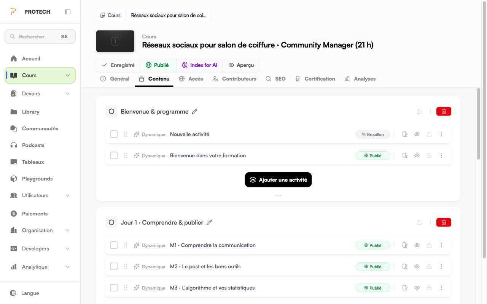
1 2 3 4 🔍 cliquer pour zoomer- 1Onglets du cours — Général · Contenu · Accès · Contributeurs · SEO · Certification · Analytics : tout le cours se gère depuis cette barre (les onglets se filtent selon les droits du compte).
- 2État par activité — badge « Publié » vert / « Brouillon » : clic pour basculer. Seules les publiées comptent pour la complétion et apparaissent aux apprenants.
- 3Actions par activité — le crayon ouvre l'éditeur complet (écran 07), l'icône œil l'aperçu apprenant, « Accès : ouvert à tous » règle le verrou (public / payant / séquentiel).
- 4Chapitres dynamiques — « Jour 1 · Comprendre & publier », etc. : se réorganisent par glisser-déposer ; « Ajouter une activité » en bas de chaque chapitre ; création de chapitre en un clic.
Création rapide : bouton « Créer un cours » (écran 09) en 2 minutes — manuellement (nom + description) ou par IA : décrivez « formation community manager pour salon de coiffure, 3 jours » et le plan + les activités sont proposés, prêts à ajuster.
07
…/course/…/activity/94c4ea91…/edit
L'éditeur d'activité En place
Comment on arrive ici
- Crayon d'une activité depuis le plan (écran 06)
- Ouverture plein écran, éditeur type traitement de texte
Où mènent les actions
- Enregistrer → chaque sauvegarde crée une version restaurable
- Publier → visible immédiatement côté apprenant
- Assistant IA → génère/complete le contenu de la page
…/course/…/activity/94c4ea91…/edit
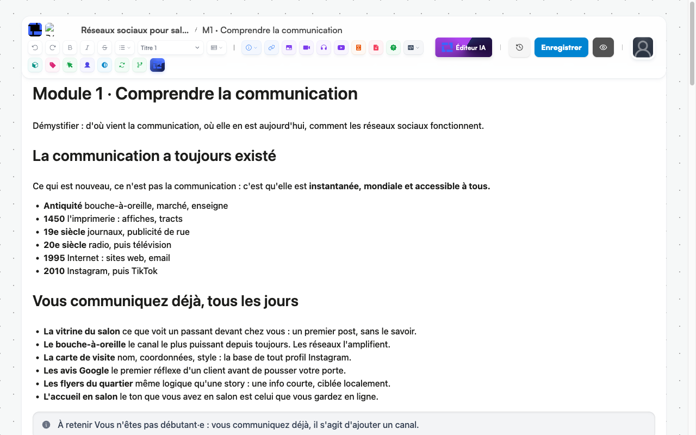
1 2 3 4 🔍 cliquer pour zoomer- 1Barre d'outils complète — titres, gras/italique, listes, citations, tableaux, code, séparateurs ; insertion d'images, vidéos, PDF, audio, fichiers téléchargeables et blocs quiz. Le tout en clic, sans HTML.
- 2Versioning + état — l'horloge ouvre l'historique : chaque sauvegarde est datée, consultable et restaurable. Boutons Brouillon ↔ Publié : la publication est instantanée pour les apprenants.
- 3Zone d'édition — page riche WYSIWYG : ce que vous tapez est exactement ce que l'apprenant verra (écran 05). Coller depuis Word/Docs conserve la mise en forme.
- 4Assistant IA intégré — dans la barre : « rédige une intro sur les algorithmes des réseaux sociaux » → le contenu se génère dans la page, éditable avant publication.
Quiz : bloc dédié — questions à choix, bonne réponse, explication ; la note remonte dans la progression et l'analytics du cours.
08
learn.ordria.fr/orgs/protech/dash
Accueil du backoffice En place
Comment on arrive ici
- Bouton « Tableau de bord » de la navigation (droits requis)
- PROTECH y arrive avec le rôle Admin ou Instructor
Où mènent les actions
- Menu complet : Cours, Devoirs, Library, Utilisateurs…
- « Créer un cours » → assistant de création
- Dernier cours modifié → éditeur (écran 06)
learn.ordria.fr/orgs/protech/dash
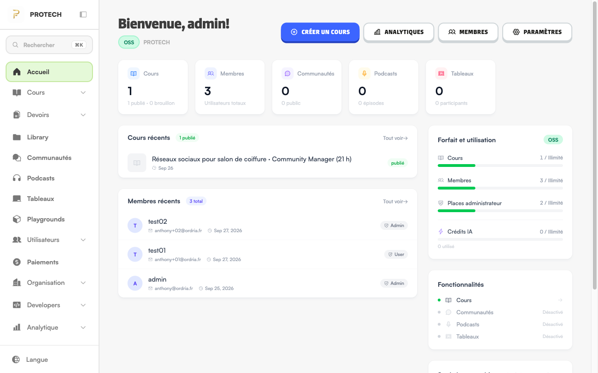
1 2 3 🔍 cliquer pour zoomer- 1Menu latéral — Accueil · Cours · Devoirs · Library · Utilisateurs · Communautés · Podcasts · Tableaux · Playgrounds · Paiements · Analytique · Organisation · Developers. Chaque entrée se filtre selon les droits (un Instructor ne voit pas Paiements ni Utilisateurs).
- 2En-tête de contexte — « Bienvenue, [prénom] » + badge OSS/PROTECH : vous êtes toujours dans l'organisation courante ; le sélecteur (icone organisations) bascule d'une org à l'autre en un clic.
- 3Cartes de statistiques — cours publiés/brouillons, membres totaux, tableaux actifs ; plus bas : derniers cours modifiés avec ouverture directe de l'éditeur, et le bouton « Créer un cours ».
Chargé par rôle : ce que voit un Instructor (créer/éditer les cours) est différent d'un Admin (tout, incl. Utilisateurs et Réglages) — vérifié : toute action hors droits est refusée par l'API même en forçant l'URL.
09
…/orgs/protech/dash/courses
Gestion des cours En place
Comment on arrive ici
- Menu Cours du backoffice
Où mènent les actions
- Carte de cours → les 7 onglets d'édition (écran 06)
- « Nouveau cours » → création manuelle ou par IA
- Filtres publiés/brouillons, recherche
…/orgs/protech/dash/courses
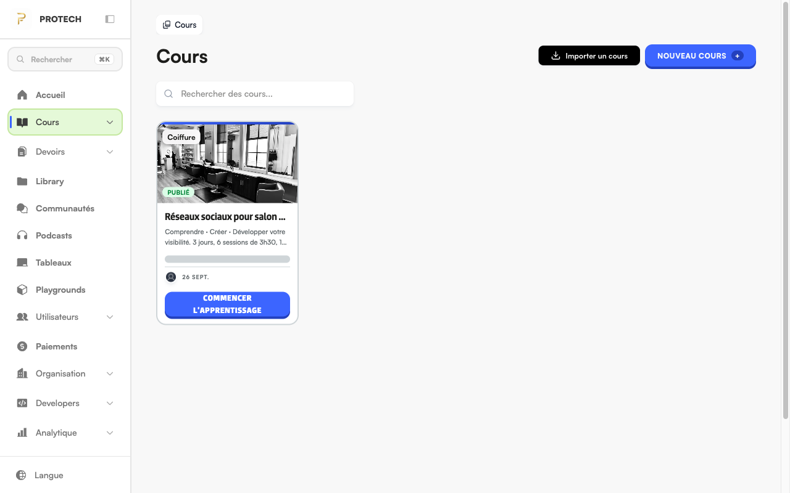
1 2 🔍 cliquer pour zoomer- 1« Nouveau cours » — ouvre l'assistant : nom, description, miniature, ou génération IA complète du plan. Le cours naît en brouillon : rien n'est visible des apprenants avant publication.
- 2Carte de cours — miniature, titre, état publié/brouillon, derniers chapitres modifiés ; un clic ouvre la fiche à 7 onglets (Général · Contenu · Accès · Contributeurs · SEO · Certification · Analytics).
Les 7 onglets en bref : Général (nom, description, miniature, tags, objectifs d'apprentissage affichés aux apprenants) · Contenu (écran 06) · Accès (visible au catalogue ou privé ; groupes autorisés) · Contributeurs (co-auteurs) · SEO (titre/description moteurs) · Certification (activer le certificat : nom, formateur, n° de série, mention Qualiopi + NDA) · Analytics (vues, inscriptions, complétions de ce cours).
10
…/dash/org/settings/landing
Éditeur de la vitrine En place
Comment on arrive ici
- Backoffice → Organisation → Réglages → onglet Landing
Où mènent les actions
- Enregistrer → la vitrine (écran 01) se met à jour
- Ajouter/réordonner/supprimer des sections
- Variants : fond uni ou dégradé, image pleine largeur, chiffres clés, logos partenaires
…/dash/org/settings/landing
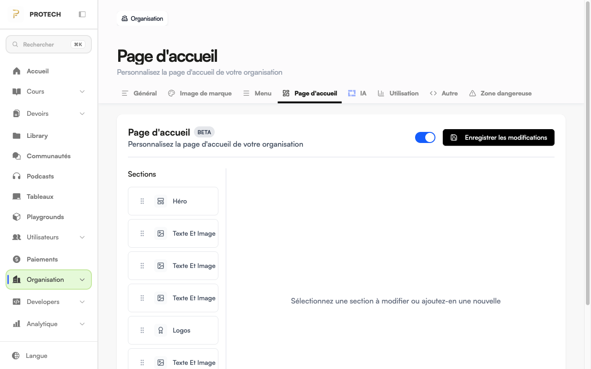
1 2 3 🔍 cliquer pour zoomer- 1Sections — la vitrine se compose de blocs : héros, chiffres clés, texte+image (les cartes formations), logos partenaires (OPCO), certification (Qualiopi), contact. Chaque section se plie/déplie, se réordonne, se supprime.
- 2Champs du héros — titre, sous-titre, badge de confiance, deux boutons (texte + lien + style plein/contour), image/mascotte (téléversée), fond (dégradé personnalisable : direction + couleurs exactes de la charte).
- 3Aperçu et publication — l'aperçu reflète les changements ; Enregistrer applique immédiatement la vitrine publique. Onglets voisins : Branding (couleur d'accent, police), Fonctions (interrupteurs modules), Utilisateurs (invitations/codes), Automations (webhooks)…
Les 14 onglets de Réglages : Général · Landing · Branding · IA · Fonctions · Usage · Domaines · SSO · SEO · Automations · API · Menu · Autres · Danger (effacement, protégé).
11
learn.ordria.fr/admin/organizations
Superadmin — organisations En place
Comment on arrive ici
- learn.ordria.fr/admin — connexion compte plateforme (toit)
- Réservé au superadmin : accès à toutes les organisations
Où mènent les actions
- « New organization » → création (nom, slug, email)
- Ligne d'org → détail 7 onglets (écran 12 pour Users)
- « Dashboard » → backoffice de cette org (écran 08)
learn.ordria.fr/admin/organizations
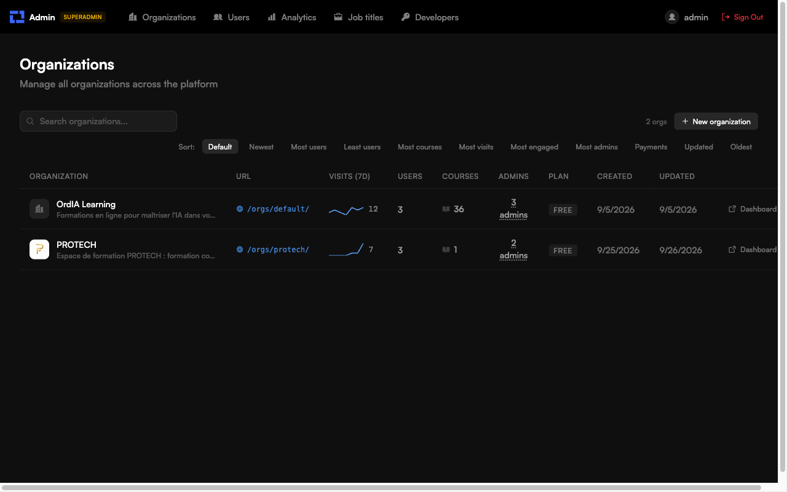
1 2 3 🔍 cliquer pour zoomer- 1Créer une organisation — « New organization » : nom, slug (l'adresse /orgs/slug/), email du responsable. L'org naît avec sa vitrine éditable et son espace de cours.
- 2Vue consolidée — chaque ligne : nom + description, URL, mini-courbe des visites 7 jours, membres, cours, admins (info-bulle), statut. Recherche, tri par visites/cours/membres/admins, pagination.
- 3Accès direct — « Dashboard » ouvre le backoffice de l'organisation dans son contexte. Le menu gauche du superadmin : Organizations · Users · Analytics · Job titles · Developers.
Vue Users (plateforme) : tous les comptes toutes orgs confondues — recherche, filtres (superadmin, nb d'orgs), édition (nom, email, promotion superadmin), suppression (jamais son propre compte).
12
learn.ordria.fr/admin/organizations/39?tab=users
Superadmin — membres d'une organisation En place
Comment on arrive ici
- Superadmin → Organizations → PROTECH → onglet Users
Où mènent les actions
- « Ajouter » → compte existant OU invitation par email
- Changement de rôle dans le menu → effet immédiat
- « Retirer » → sortie de l'org (garde : dernier admin)
learn.ordria.fr/admin/organizations/39?tab=users
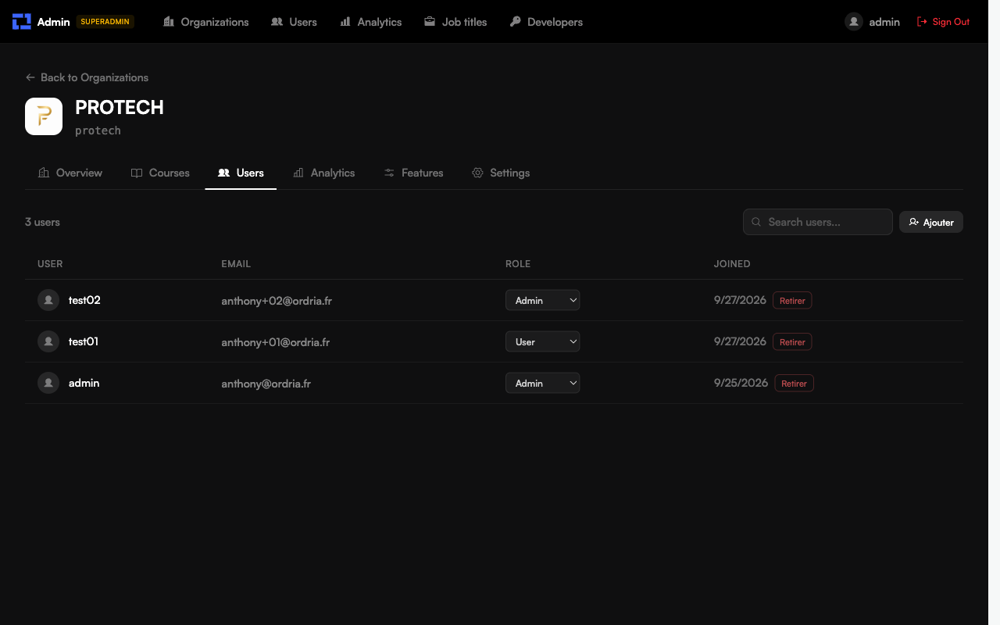
1 2 3 4 🔍 cliquer pour zoomer- 1« Ajouter » — deux modes : Compte existant (tapez l'email ou le pseudo, le membre rejoint à la seconde) ou Inviter par email (la personne reçoit un lien ; l'invitation apparaît « en attente » jusqu'à ce qu'elle rejoigne).
- 2Membre avec rôle en direct — chaque ligne affiche le sélecteur : Admin · Maintainer · Instructor · User. Changer la valeur prend effet immédiatement (le membre voit ses menus évoluer sans se reconnecter).
- 3« Retirer » — sortie de l'organisation avec confirmation ; garde intégrée : impossible de retirer le dernier admin d'une org.
- 4Invitations en attente — les emails invités qui n'ont pas encore rejoint s'affichent avec badge ambre « Invitation en attente », état d'envoi de l'email (envoyé / échec), et bouton « Annuler ». La ligne disparaît automatiquement quand la personne rejoint.
Matrice des rôles : Apprenant (suivre, progresser, certificats) → Instructor (+ créer/éditer les cours) → Maintainer (+ gestion contenu étendue) → Admin org (+ membres, invitations, réglages, analytics) → Superadmin (plateforme entière). Testé : refus API systématique hors droits, isolation totale entre organisations.
06
…/dash/courses/course/…/certification
Certification du cours En place
Comment on arrive ici
- Backoffice → Cours → ouvrir → onglet Certification
Où mènent les actions
- Activer → certificat à 100 % des activités
- Mention Qualiopi sur le PDF
…/dash/courses/course/…/certification
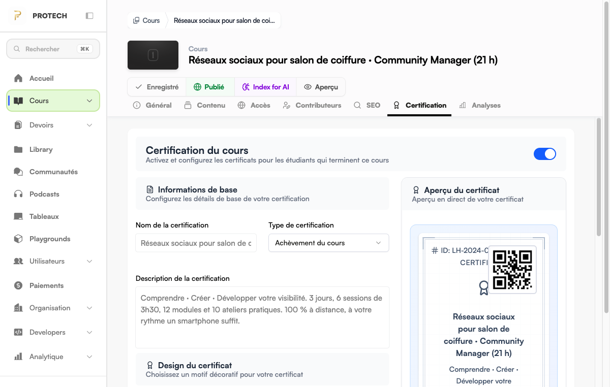
1 2 🔍 cliquer pour zoomer- 1Certificat activé — nom, formateur (« PROTECH Formation »), n° de série. Obtenu automatiquement à 13/13 activités publiées.
- 2Mention Qualiopi — toggle + n° NDA (11911019391) : logo et mention légale sur le PDF nominatif, vérifiable en ligne.
Le certificat PDF : nominatif, daté, logo PROTECH, mention Qualiopi, n° NDA, numéro unique vérifiable publiquement.
12
…/dash/users/settings/users
Gérer vos membres En place
Comment on arrive ici
- Backoffice → Utilisateurs
Où mènent les actions
- Changer un rôle → effet immédiat
- Retirer (garde dernier admin)
- Onglet « Inscriptions » → codes
…/dash/users/settings/users
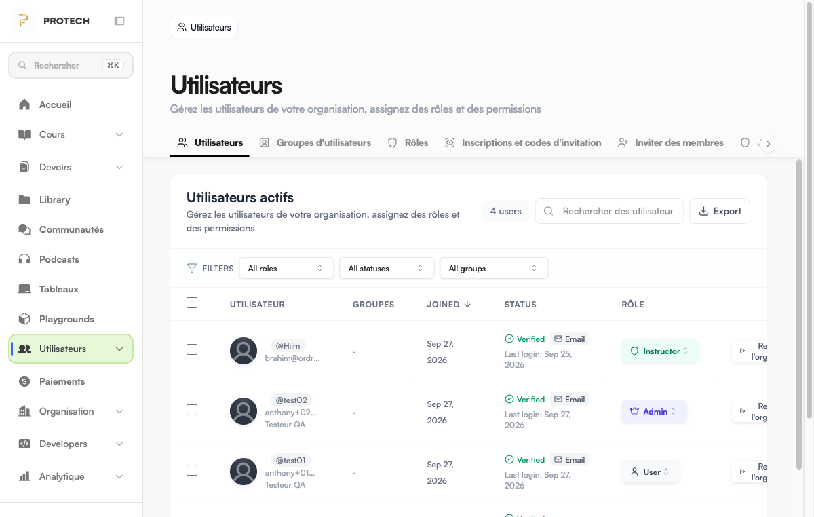
1 2 🔍 cliquer pour zoomer- 1Liste des membres — avatar, nom, email, rôle (cliquer pour changer), date d'arrivée, icône poubelle pour retirer.
- 2Ajouter / Inviter — compte existant ou invitation par email ; l'onglet « Inscriptions » gère les codes d'invitation.
13
…/orgs/protech/dash/analytics
Analytics En place
Comment on arrive ici
- Backoffice → Analytique
Où mènent les actions
- Filtre 7/30/90 jours
- Graphiques → hover pour valeurs
…/orgs/protech/dash/analytics
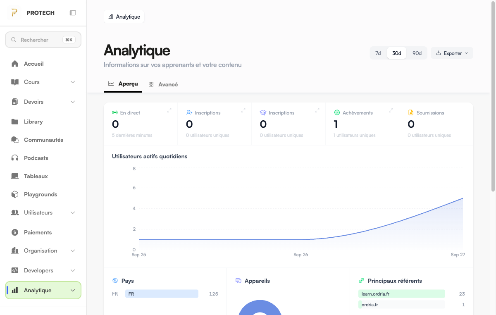
1 2 🔍 cliquer pour zoomer- 1Vues d'ensemble — utilisateurs actifs, pages vues, inscriptions, complétions ; période filtrable 7/30/90 jours.
- 2Graphiques détaillés — actifs/jour, entonnoir d'inscription, cours populaires, pays et appareils des stagiaires.
Trois niveaux : par cours (onglet Analytics de l'éditeur), par organisation (cet écran), par activité.
14
…/dash/org/settings/features
Fonctions on/off En place
Comment on arrive ici
- Backoffice → Organisation → Réglages → Fonctions
Où mènent les actions
- Interrupteur ON/OFF → module activé/masqué
- Effet immédiat
…/dash/org/settings/features
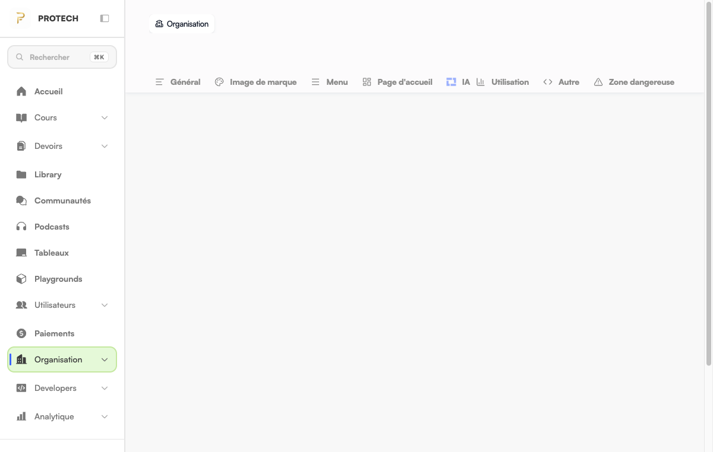
1 2 🔍 cliquer pour zoomer- 1Modules on/off — communautés, podcasts, tableaux, playgrounds, paiements : désactiver masque sans supprimer.
- 2Mode d'inscription — ouvert ou sur invitation (configuration actuelle de PROTECH).
13
learn.ordria.fr/admin/users
Superadmin — tous les comptes plateforme En place
Comment on arrive ici
- Superadmin → Users
Où mènent les actions
- « Modifier » → username, email, nom, prénom, superadmin on/off, supprimer
- Recherche + filtres (superadmin, nb d'orgs)
- Info-bulle organisations → liste des orgs de ce compte
learn.ordria.fr/admin/users
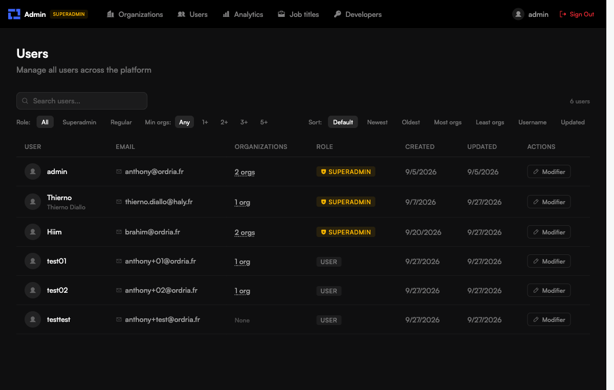
1 2 🔍 cliquer pour zoomer- 1Vue plateforme — tous les comptes de toutes les organisations : username, email, nom complet, badge Superadmin ou User, nombre d'organisations avec info-bulle détaillée.
- 2Bouton « Modifier » — ouvre le modal complet : username, email, prénom/nom, interrupteur Superadmin (donner/retirer la clé maîtresse), bouton Supprimer avec confirmation (jamais son propre compte).
Gestion complète : promouvoir un co-administrateur plateforme en un clic, corriger un email, supprimer un compte de test — tout depuis cet écran, effet immédiat.